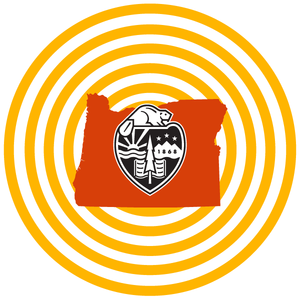
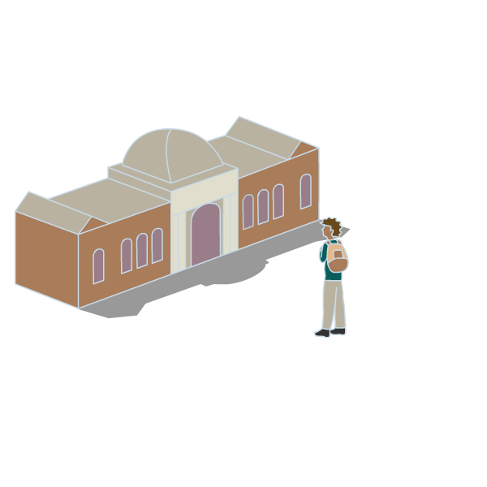
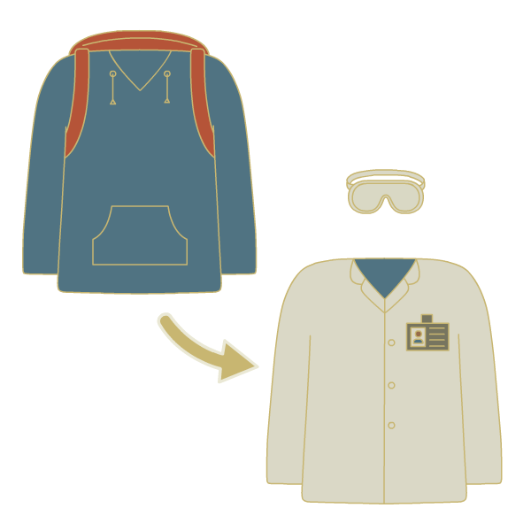
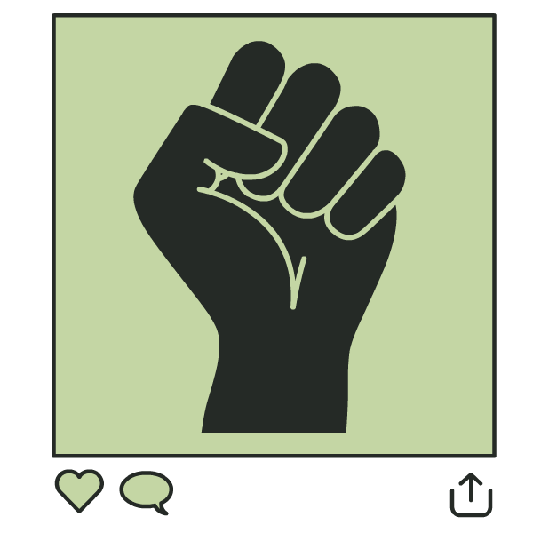

MedStaircase empowers students to pursue medical careers.

Visualizing yourself as a doctor, surgeon or medical specialist can feel like a stretch — especially if you don’t have someone to guide you along the way. So MedStaircase is stepping into that role — giving traditionally underrepresented students opportunities to see themselves working in health care.
Established in May 2021, MedStaircase is a collaborative effort between physicians, led by Kate Ropp M.D., an anesthesiologist in Portland who earned a degree in biology from Oregon State in 2003. The nonprofit connects medical professionals with students interested in medicine, providing support and access to help them pursue their career goals.
By physicians, for students
To find those students and see how they could help, Ropp and her colleagues reached out through programs like the Minority Association of Pre-Medical Students at Oregon State and the University of Oregon. They discovered many students didn’t have family members or friends to job shadow at clinics or hospitals. Ropp recognizes this lack of real-world exposure creates a barrier.
“When I was a kid, I knew there were astronauts, but it felt too far-fetched to become one,” Ropp says. “For a lot of first-generation students, there isn’t someone in their life who can guide them and show them the steps to joining the medical field.”
So Ropp and her colleagues decided to create those opportunities, virtually.
Any interested student could join a Zoom panel, featuring physicians from different specialties. MedStaircase has conducted eight panels so far, featuring speakers like emergency room and internal medicine doctors, pediatricians and surgeons — each giving a real-life glimpse and perspective of what a career in these areas looks like. In addition, students could speak one-on-one with doctors in breakout rooms following each panel.
As the COVID-19 vaccine became widely available, MedStaircase expanded programming to include weeklong in-person job shadow opportunities at several clinical sites in Portland. In the operating room, students observed procedures like cesarean sections, open-heart surgery, facial reconstruction, burn victim surgery and others. Students also spent time at outpatient clinic settings learning pediatrics, internal medicine, dermatology and more.
Ropp says one of the top goals of the program was to remove any barriers that prevent students from accessing these opportunities. To that end, MedStaircase gave scholarships of around $1,000 to 17 students to offset expenses like travel and lodging.
A life-changing impact
For students and recent graduates who participated in MedStaircase, the experience has revealed new career pathways.
Ariah Tesema, a junior in the College of Science, says MedStaircase opened her eyes to medical professions she didn’t previously know about.
“I was able to learn that I don’t need to become a surgeon in order to make a difference in the [operating room,]” she says.
Tesema adds that this realization made her understand how valuable the team surrounding a surgeon is, expanding her list of potential careers.
After she graduates, Tesema plans to continue exploring her many interests — including becoming a travel surgeon through a program like Doctors Without Borders.
Ricardo Mendoza Escobedo, a 2021 Oregon State graduate, discovered that even a simple procedure can drastically improve a patient’s quality of life. He says viewing several different medical procedures showed him the true variety that exists in a medical career. MedStaircase has made available resources he wouldn’t have otherwise known about, along with mentors he can reach out to with questions.
Mendoza is currently working as a clinical research assistant at Oregon Health & Science University in Portland. He hopes to eventually help fulfill the medical needs of the rural Eastern Oregon community where he grew up.
For 2021 OSU graduate Jennie Link, one of the most valuable aspects of the MedStaircase program was the well-rounded picture it painted of a future in health care. She says hearing the pros and cons of medical school, as well as physicians’ perspectives on different medical specialties, taught her a lot about the options that fit her interests.
“Finding roles that I feel I would be well-suited for was a great boost to my confidence and helped keep me going toward my dreams of pursuing a health care career,” she says.
Link is currently working as an operating room assistant at Providence Portland Medical Center, and she continues to explore potential career options.
An ever-expanding opportunity
Because MedStaircase received such great feedback during its first year, Ropp says she hopes to increase the number of participants to 50 by the summer of 2022. In addition, she plans to expand the program beyond Oregon to Washington, reaching out to students at other universities and community colleges. She says MedStaircase will eventually include mentoring and job shadowing opportunities in other health-related fields, including physical therapy, occupational therapy and pharmacy.
Most of all, Ropp says she wants MedStaircase to help bring more diversity to all facets of medicine, which benefits both practitioners and patients.
”Health care needs you,” she says. “Patients from groups that have been historically marginalized are justifiably wary of the house of medicine. But when patients share an identity with their physician that is culturally concordant, their health outcomes are better. You can directly shape the health of your community by pursuing a career in health care.”
And now, there is a clearer pathway for that pursuit.
For more information on participating in MedStaircase or becoming a mentor, visit medstaircase.org.
Related Stories
- Video file
- Video file
- Video file
- Video file